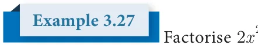
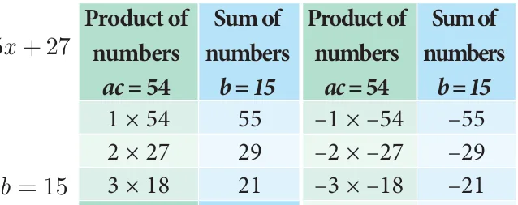
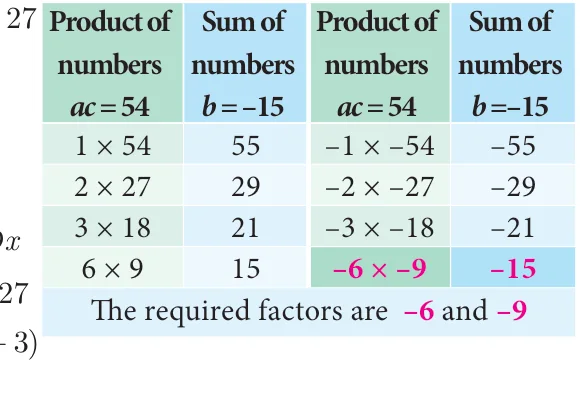
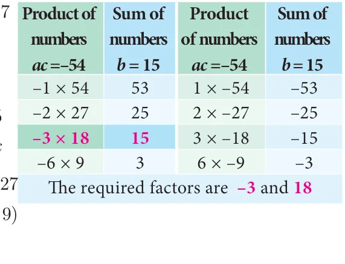
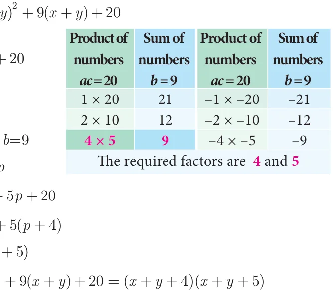

\(ax^2 + bx + c\), \(a \ne 0\)
The linear factors of \(ax^2 + bx + c\) will be in the form \((kx + m)\) and \((lx + n)\)
Thus, \(ax^2 + bx + c = (kx + m)(lx + n) = klx^2 + (lm + kn)x + mn\)
Comparing coefficients of \(x^2\), \(x\) and constant term \(c\) on both sides. We have, \(a = kl\), \(b = (lm + kn)\) and \(c = mn\).
Steps to be followed to factorise \(ax^2 + bx + c\):
Step 1: Multiply the coefficient of \(x^2\) and constant term, that is \(ac\).
Step 2: Split \(ac\) into two numbers whose sum and product is equal to \(b\) and \(ac\) respectively.
Step 3: The terms are grouped into two pairs and factorise.


Example 3.27 Factorise \(2x^2 + 15x + 27\)
Solution
Compare with ax \(+bx +\) we get, = , = , = product ac \(= \times =\) 54and sum \(b = 15\) We find the pair 6, 9 only satisfies "b = 15" and also "ac = 54".
\ we split the middle term as 6x and 9x
\(2x +15x + 27 = 2x + 6x + 9x + 27\)
\(= 2x(x + 3)+ 9(x + 3) =\) (x \(+ 3)(2x + 9)\)
Therefore, \((x + 3)\) and \((2x + 9)\) are the factors of \(2x^2 + 15x + 27\).

Example 3.28 Factorise \(2x^2 - 15x + 27\)

Solution
Compare with \(ax^2 + bx + c\): \(a = 2\), \(b = -15\), \(c = 27\)
product ac \(= 2 \times 27 = 54\), sum \(b= - 15 \\) we split the middle term as \(- 6x\) and \(- 9x\)
\(2x - 15x + 27 = 2x - - +\)
\(= 2x( -\) - ( - )
= (x - )( - )
Therefore, ( - ) and ( - ) are the factors of \(2 - +\) .

Factorise \(+ -\)

Solution
Compare with ax \(+bx +\) Here, = , = , \(= -\) product ac \(= 2 \times - 27 = - 54\), sum \(b=15 \\) we split the middle term as 18x and \(- 3x\)
\(2x +15x - 27 = 2 + - -\)
\(= 2\) ( + ) - ( + )
= ( + )( - )
Therefore, ( + ) and( - ) are the factors of \(2 \frac{+15x - 27.}{Sum\) of} Example 3.30 Factorise \(2x^2 - 15x - 27\)

Solution

Compare with ax \(+bx +\) Here, = , \(= -\) , \(= -\) product ac \(= 2 \times - 27= - 54\), sum \(b= - 15 \\) we split the middle term as \(- 18x\) and 3x
\(2x -15x -27 = 2x - 18x + 3x - 27\)
\(= 2x(x - 9)+ 3(x - 9) =\) (x \(- 9)(2x + 3)\)
Therefore, ( - ) and(2x \(+ 3)\) are the factors of 2x -15x -27
Example 3.31 Factorise \((x + y)^2 + 9(x + y) + 20\)

Solution
Let \(x +y = p\) , we get \(+ +\) Compare with ax \(+bx +\) ,
We get \(a = 1\), \(b =\) , =
product ac \(= 1 \times 20 = 20\), sum b=9
\ we split the middle term as 4p and 5p
\(p + 9p + 20 = + + +\)
= \(+ )+\) ( + )
= ( + )( + )
Put, \(p = x +y\) we get, ( + ) + \(+ )+ =\) \(+ +\)\(+ +\)

- Factorise the following:
- (i) \(x^2 + 10x + 24\) (ii) \(z^2 + 4z - 12\) (iii) \(p^2 - 6p - 16\)
- (iv) \(t^2 + 72 - 17t\) (v) \(y^2 - 16y - 80\) (vi) \(a^2 + 10a - 600\)
- Factorise the following:
- (i) \(2a^2 + 9a + 10\) (ii) \(5x^2 - 29xy - 42y^2\) (iii) \(9 - 18x + 8x^2\)
- (iv) \(6x^2 + 16xy + 8y^2\) (v) \(12x^2 + 36x^2y + 27y^2x^2\)
- (vi) \((a + b)^2 + 9(a + b) + 18\)
- Factorise the following:
- (i) \((p - q)^2 - 6(p - q) - 16\) (ii) \(m^2 + 2mn - 24n^2\) (iii) \(\sqrt{5}a^2 + 2a - 3\sqrt{5}\)
- (iv) \(a^4 - 3a^2 + 2\) (v) \(8m^3 - 2m^2n - 15mn^2\) (vi) \(\frac{1}{x^2} + \frac{2}{xy} + \frac{1}{y^2}\)